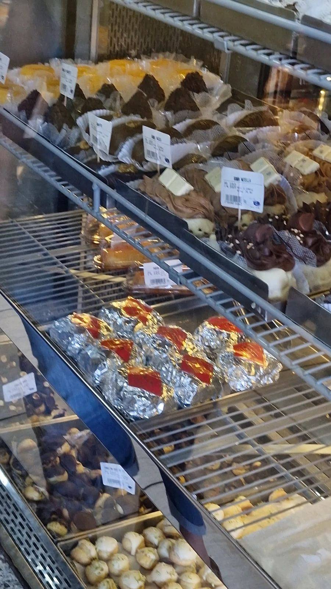
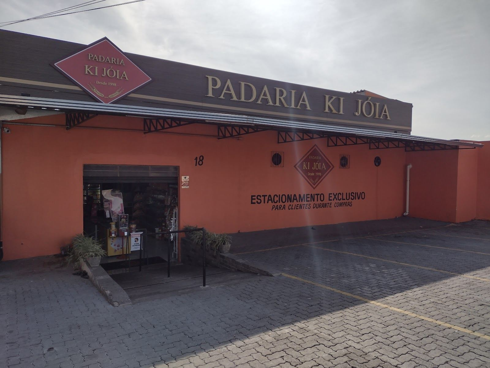
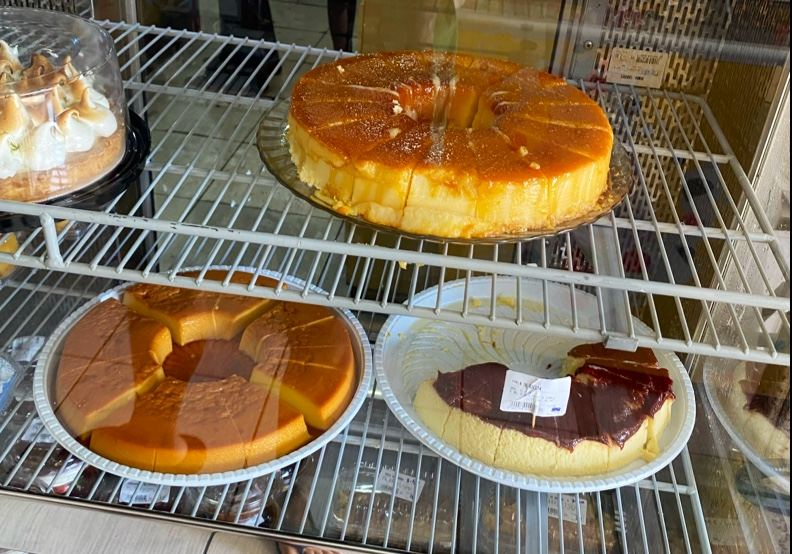
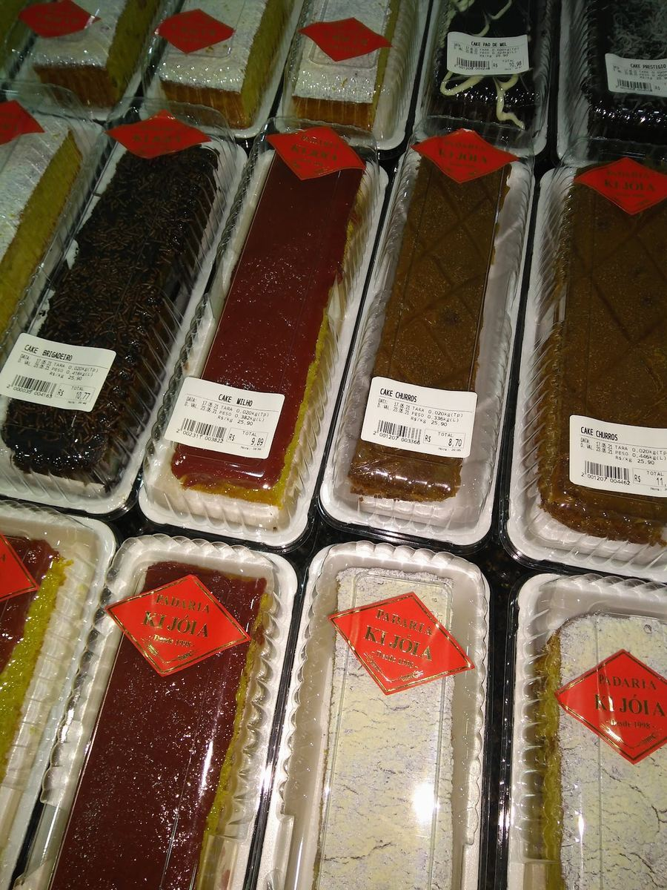
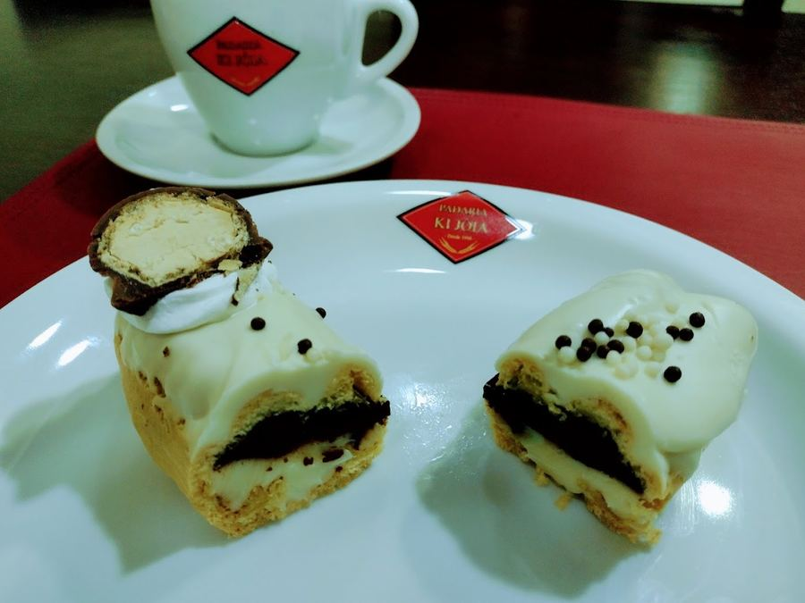
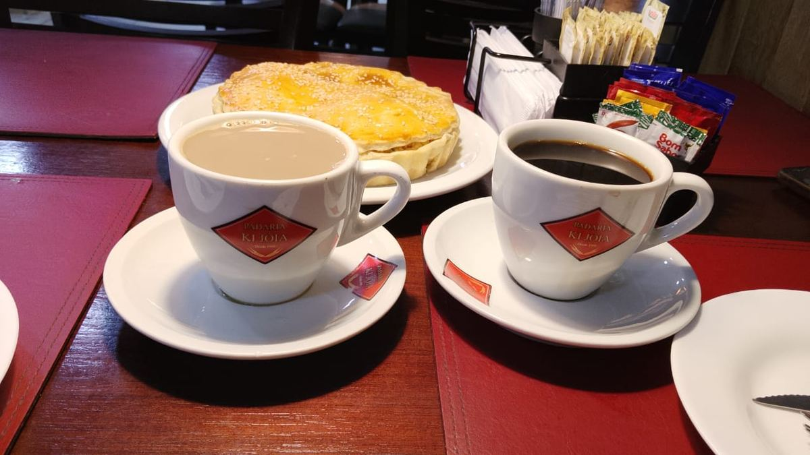
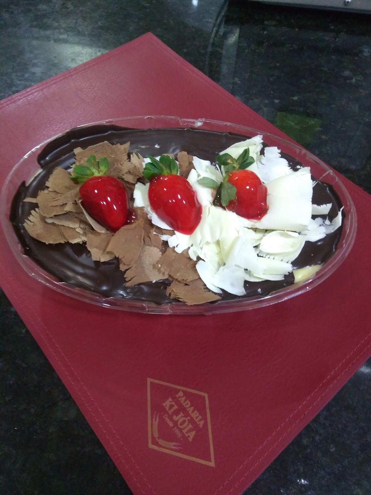
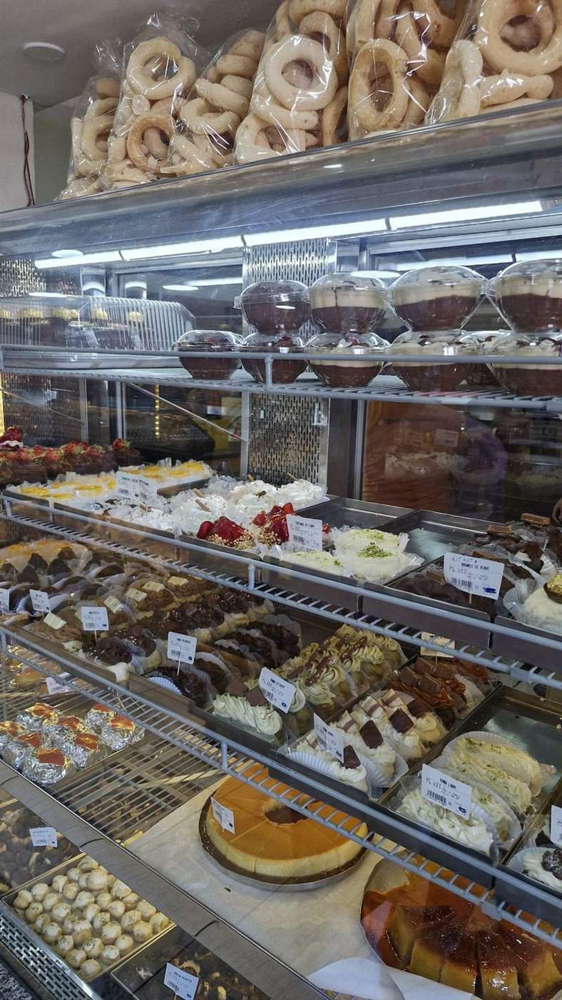

Doces finos
Bombons, docinhos e doces de vitrine. E, do lado, os salgados que os clientes não cansam de elogiar.

Padaria de bairro no Jardim Aero Continental: vitrine cheia de salgados, doces e tortas, cappuccino, pão na chapa e mesa para tomar o café da manhã sem pressa.
Quem passa pela Ki Jóia costuma falar da variedade. Tem coisa para o café da manhã, para o lanche da tarde e para levar para casa no fim do dia.

Bombons, docinhos e doces de vitrine. E, do lado, os salgados que os clientes não cansam de elogiar.

Tortinha de morango, pudim, tortas inteiras e fatias na vitrine refrigerada.

Doces de corte embalados com a etiqueta da casa, prontos para a sobremesa de casa.

Cappuccino, cafezinho, pão na chapa e lanches para comer ali mesmo.
Tem mesa para comer no salão e, se precisar de mais espaço, a equipe ajuda a juntar outra. A ideia aqui é aquela padaria em que você toma café sem olhar o relógio.



Pare na porta enquanto faz as compras. Fica na R. João José Pereira, 18.
“Pães muito bons, ótima variedade de produtos e bom serviço de café da manhã.”Resumo das avaliações no Google
“Eu e meu esposo amamos o cappuccino deles e o pão na chapa.”Maria · avaliação no Google
“As vitrines estão sempre cheias de produtos e tem um lugar excelente para comer.”Cliente · avaliação no Google
| Segunda | 6h às 21h |
| Terça | 6h às 21h |
| Quarta | 6h às 21h |
| Quinta | 6h às 21h |
| Sexta | 6h às 21h |
| Sábado | 6h às 20h |
| Domingo | 6h às 19h |